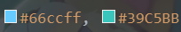
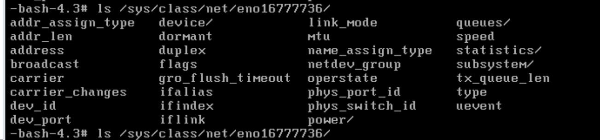

作品 · 工具分享 · 日常
石蒜摇 | vscode插件发布
前言 逛B站看到itorr大佬做的石蒜模拟器，太魔性了，根本停不下来，就打算移植到vscode插件里 原作者 Original Author： 卜卜口 itorr 原项目仓库 OriginalGit： https://github.com/…
では、ゲームを始めましょう
GO FOR IT !
前言 逛B站看到itorr大佬做的石蒜模拟器，太魔性了，根本停不下来，就打算移植到vscode插件里 原作者 Original Author： 卜卜口 itorr 原项目仓库 OriginalGit： https://github.com/…

前言 手上有部老ipadmini2，放着吃灰不好，就拿来做看书看漫画专用机。 哔哩哔哩漫画乘着活动充了50元，但还是不够划算，继续充钱有点亏，就研究了几个开源漫画软件。 目前我看下来ios上其实比较好的是源阅读，但是ipadmini2系统只…

前言 给小站加上右侧边 —> 这个彩色动态滚动条的时候，遇到了js无法修改css的问题 排查之后发现是document.querySelector("#progressBar")返回了null值 折腾了好久，甚至以为是不支持querySel…

症状 LFS系统无任何包管理器软件，用不了apt，yum，rpm，只能通过编译安装 另外编译相关的工具链和依赖还存在各种缺失问题，导致想要编译安装rpm也会报错 解决步骤 整理一下依赖顺序 我这里一次次编译报错，试出来缺失这些依赖： lib…

症状 sys/class/net/下存在eno16777736 /etc/sysconfig/network里相关的文件一点没有 （这里如果有network文件夹，且里面有eth0或其他网卡的配置文件，可以按照网上其他教程操作，直接开启网卡…

前言 前两天D盘炸了，数据没了，要考虑一下数据备份才行，毕竟搞不好什么时候数据就没了 准备python 最新版即可，自行下载 （bypy支持Python 2.7+, 3.3+) 安装bypy bypy是百度云的一个python客户端，可以直…


想必你听过很多“智械危机”，“AI统治人类”之类的危机论，阴谋论。然而这些都不过是某些媒体制造矛盾对立获取热点、吸引眼球的手段，或是某些不知变通唯恐被取代工作岗位的顽固打工人发出的危言抗议。 事实上，这些AI危害论是很可笑的一件事。 想必你…

前言 我们不如叫它“6倍筛法” （笑 关于素数的6倍原理 只有6k-1和6k+1才“有可能”是质数 先列一段素数 0 1 2 3 4 5 6 7 8 9 10 11 12 13 14 15 16 17 18 19 20 21 22 23 2…

嘉然陪你打代码~ 然然会跟着你的动作敲击键盘~ 受BongoCat（代打猫）启发，制作这样一个“嘉然代打”的vscode插件 其中“代打”一词致敬“代打猫” 简单预览 功能概况 检测26个字母和数字键的按击，然然会做出相应动作，同时一旁还会…